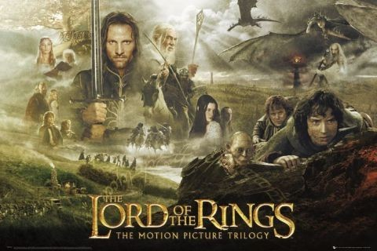

The Lord of the Rings

The Lord of the Rings is a trilogy based in the fantastical world of Middle-Earth. It was written by J.R.R. Tolkein and is one of his most reputable works; being read internationaly and intergenerationaly, along with being converted into a major moton picture.
The novel follows a young Hobbit by the name of Frodo Baggins. Hobbits are one of the mythical races created by Tolkein; they are described as small and stout, with curly locks of hair, and large feet on which resides unkept dense hair. Hobbits' main passtime is eating and making things to eat, they are often compared to human children. At Bilbo's 111th birthday, Frodo mysteriously inhereits a magical ring from his uncle Bilbo Baggins. Subsequently he is pulled into a whirlwind adventure sparked by the Wizard Gandalf the Grey. He is joned by his three compatraites and mates Sam, Merry, and Pippin.
The series has become a cult classic, and has influenced numerous other authors.
This website will contain:
- My favourite character
- The inspiration for the series
- The Fellowship
- The succes and infleunce of the series